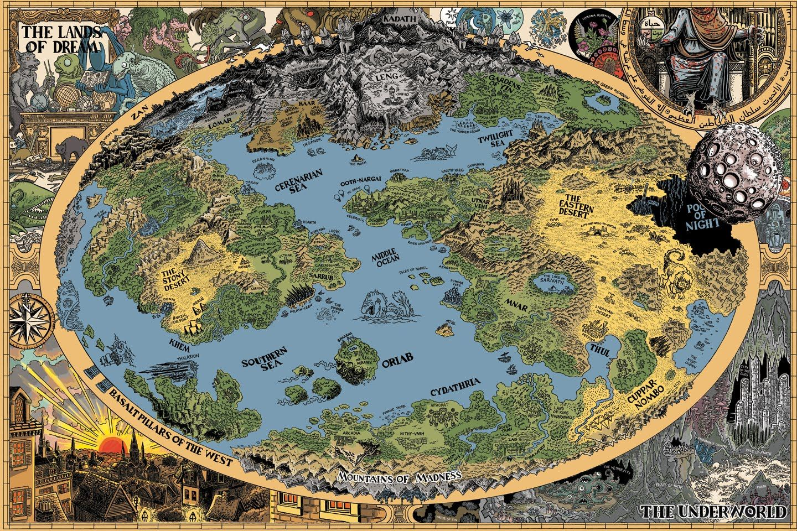

Three times Randolph Carter dreamed of the marvellous city, and three times was he snatched away while still he paused on the high terrace above it. All golden and lovely it blazed in the sunset, with walls, temples, colonnades, and arched bridges of veined marble, silver-basined fountains of prismatic spray in broad squares and perfumed gardens, and wide streets marching between delicate trees and blossom-laden urns and ivory statues in gleaming rows; while on steep northward slopes climbed tiers of red roofs and old peaked gables harbouring little lanes of grassy cobbles. It was a fever of the gods; a fanfare of supernal trumpets and a clash of immortal cymbals. Mystery hung about it as clouds about a fabulous unvisited mountain; and as Carter stood breathless and expectant on that balustraded parapet there swept up to him the poignancy and suspense of almost-vanished memory, the pain of lost things, and the maddening need to place again what once had an awesome and momentous place....
